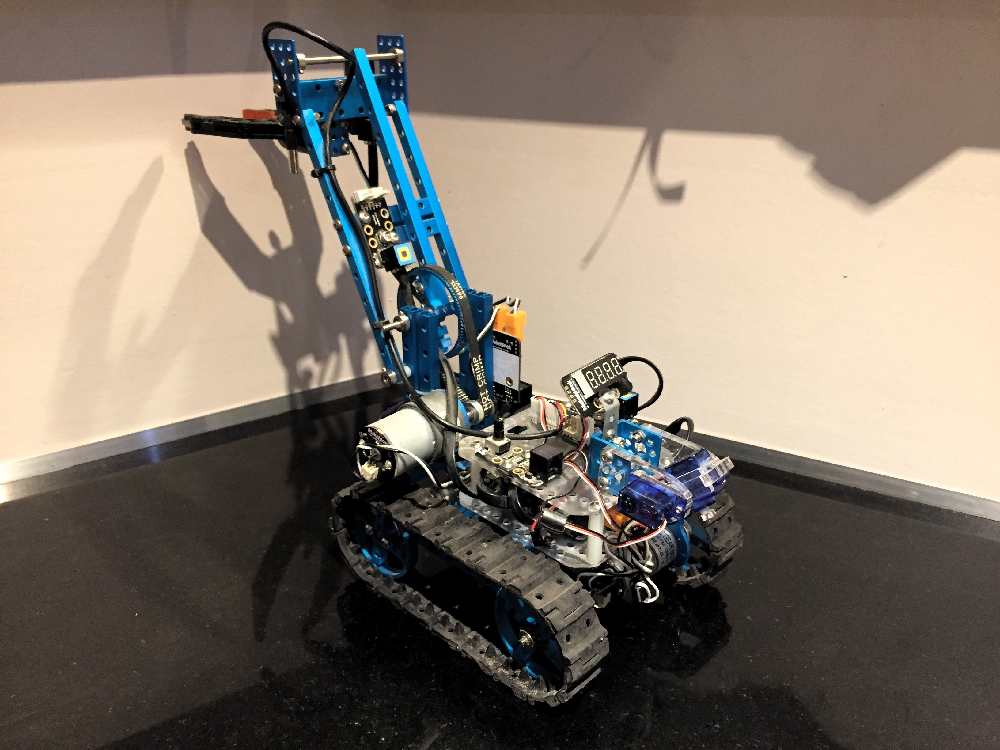
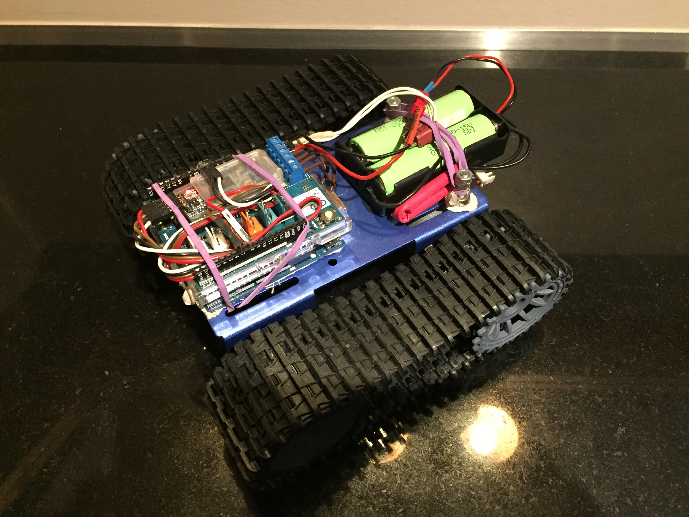
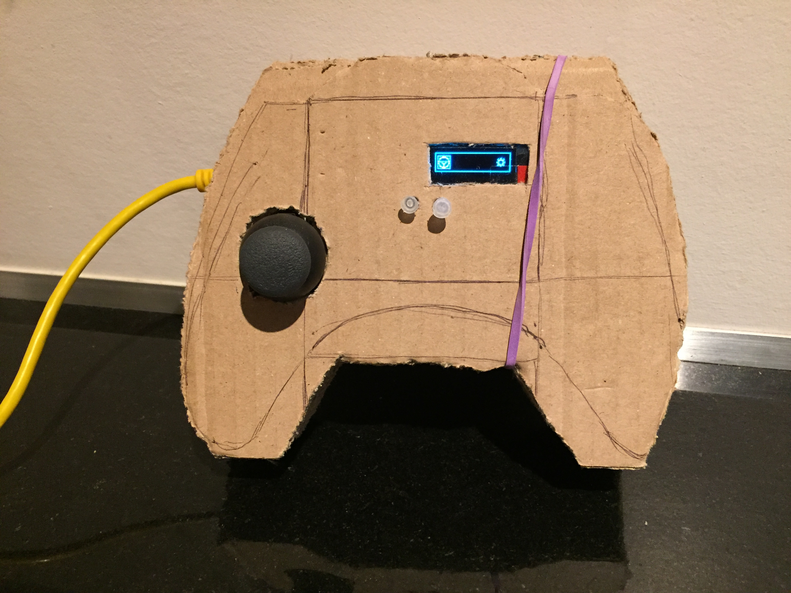
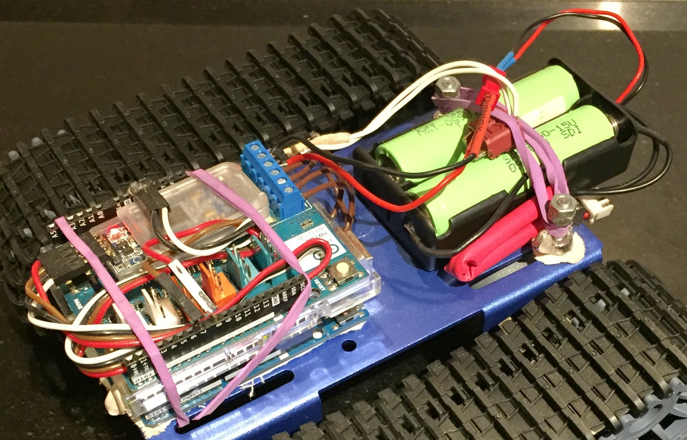
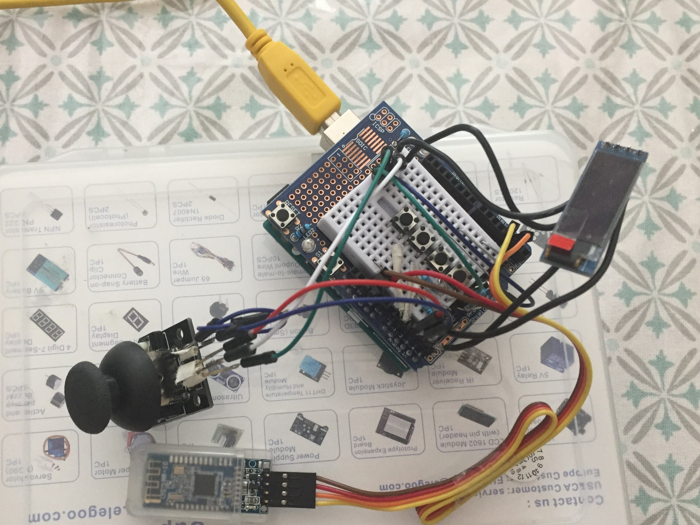

Lostsh
exploRob
Arduino & Raspberry based Robts
Depuis maintenant de nombreuses années, je suis fan d'Arduino et de Raspberry PI, raison pour laquelle j'ai eu l'occasion de traiter de nombreux projets concernant ces deux fabuleux outils !
J'ai fait connaissance avec le domaine de la robotique plus jeune, par le biais du modélisme, qui était et qui reste l'une de mes passions.
Ma nature curieuse m'a poussé à en apprendre toujours plus sur "comment cela fonctionne-t-il" et j'ai fini par construire mes propres modèles réduits. Mais ce n'était pas assez pour moi, je voulais savoir comment tout ce joli monde fonctionnait, connaître jusqu'au moindre détail du fonctionnement de chacun des composants qui me fascinent depuis si longtemps.
C'est alors que j'ai commencé à concevoir mes propres circuits, mes propres modules et quelques années plus tard j'ai peu à peu appris à les programmer.
Et voilà, nous y sommes, je me suis mis à concevoir, construire et programmer mes propres robots, pour faire .. tout ce qui me plaît et notamment de l'exploration !
Mon premier robot
Voici l'un de mes tout premiers robots. Il est doté d'un très grand nombre de modules d'exploration d'une pince principale avec un treuil de levage et d'une pince secondaire (amovible) qui est extrêmement précise, mais ne peut lever que 9g (elle est conçue à base de servomoteurs 9g).

Quelques-uns des modules embarqués sur le robot :
- Deux pinces, la principale à l'arrière est dotée d'un motoréducteur de ratio 1:144 ce qui lui confère une grande précision et une importante force d'élévation. La seconde pince à la particularité de se mouvoir sur plus d'axes que la première, ce qui lui confère une plus grande dextérité pour les taches minutieuses.
- Une caméra, pour le piloter à distance.
- Un potentiomètre pour quelques réglages de dernière minute ou quelques étalonnages.
- Un 7 segment display de 4 digits
- Deux platines de démodulation (CAN CNA) pour contrôler plusieurs autres capteurs, ainsi qu'un ventilateur pour éviter les surchauffes lors des explorations en été en plein soleil, qui ont tendance à provoquer des black-out radio
- Bluetooth Module (HM-10)
- Un thermomètre
- Un photodétecteur (et pas une photorésistance XD)
- Un phare composé de 4 leds RGB
New Bot !
Mon nouveau robot, plus performant, plus polyvalent et surtout en cours de construction !
| Bot | Remote |
|  |  |
|  |  |
Voilà un petit film réalisé par exploRob (et pour le fun !) :
Sur la vidéo, le robot n'en est qu'à la version 0.3, d'où la présence d'un bloc piles fournissant 9 v et un ampérage bien trop faible. À présent on trouve un bloc de deux cellules au lithium de 3.7 V en série qui fournissent donc un voltage de 7.4 V et un ampérage bien plus adéquat !
Plus
Pour être notifié de mes avancés vous pouvez me suivre sur Twitter : @l0stsh.